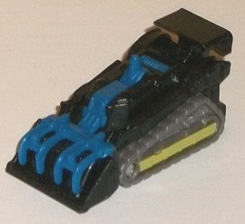
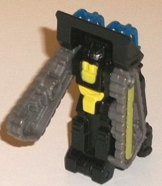
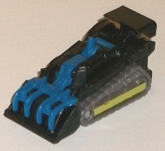
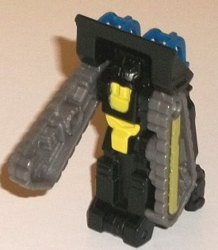
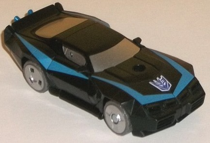
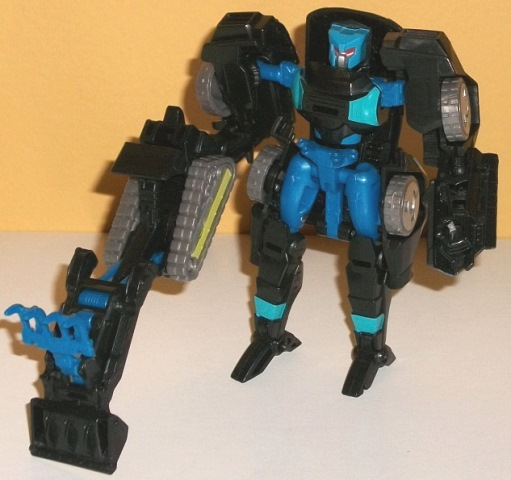

 
Difficulty of Transformations : Very Easy
Color Scheme : Black, milky gray, and some moderately dark blue, silver, and light pea green
Individual Rating : 4.3
Allegiances
: Decepticon
Size
: Legends 2-pack (comes packaged
with
Krok w/ Gatoraider
)
(NOTE: Because this set is composed of repaints,
this is not a full-blown review. This mainly covers any changes made to
the set and the color scheme, and merely compares it to the original versions
of these molds. For a review on Generations Legends Tailgate w/ Groundbuster--
the original versions of these molds-- go
here
.)
 Shakar
Shakar


Difficulty of Transformations
: Very
Easy
Color Scheme
: Black, milky gray,
and some moderately dark blue, silver, and light pea green
Individual Rating
: 4.3
"Shakar" is an anagram
of Raksha, an attender of some of the earliest BotCons and who painted
the BotCon 1995 exclusive Nightracer toys. As for Shakar himself, his main
colors are black, dark blue, and a rather nice shade of milky gray. (You
know me, I'm not usually fan of milky gray plastic, but here it works pretty
well for the treads, and is kinda shiny.) The blue contrasts against the
black while still keeping the overall color scheme pretty dark-- it's a
pretty awesome shade of blue, really. There's also some light pea green
paint apps used on the side of the treads, as well as on the chest and
waist of the robot mode, which call back to the original Nightracer toy
in their color/placement. As one final little touch, Shakar has a silver-painted
face. I do wish some of the silver and/or pea green paint had been used
on the top of the vehicle mode to break up the black a bit more, but it's
still a pretty good color scheme overall.
No mold changes have
been made to Shakar.
 Nightracer
Nightracer


Difficulty of Transformation
: Easy
Color Scheme
: Black and some moderately
dark blue, light glossy aquamarine, milky gray, silver, flat pale blue,
and dark red
Individual Rating
: 7.0
Nightracer-- at least
in vehicle mode-- is based on her '95 G2 Go-Bot redeco, and thus has a
fairly simple black-with-silver-windows color scheme with a nice pale blue
angular line going along her sides and up to the front of the hood. This
pale color of blue works fairly nicely with the black, and gives the car
mode significantly more contrast and visual interest than it otherwise
would have had. I mean, the silver paint on the windows and wheel hubs
and the milky gray plastic on the wheels themselves are decent enough colors,
but combined with just black I don't think they're enough to make the alt
mode interesting. This is especially the case since nothing on Nightracer's
front or rear bumpers is painted, which is unfortunate and honestly a bit
unexpected for a FunPub toy. In robot mode Nightracer becomes considerably
more eye-catching, with the same really nice shade of blue plastic used
on Shakar used on her midsection, upper legs, head, and bits of her shoulders.
The light glossy aquamarine paint bits on her chest and lower legs serve
as a nice accent color, both complementing the blue and contrasting against
the black pretty well. The way the paint apps are used on the chest help
accentuate the mold and make it look more feminine (which the Tailgate
mold can easily pass as, given the proportions). There's also some nice
silver used on the faceplate and dark red on the optics to help make it
more obvious she's eeeevil. I do wish a few paint apps had been added to
the arms-- particularly the lower arm details, which unfortunately are
all black. As much as I like the black-and-various-colors-of-blue color
scheme, though, it's not accurate to the original Nightracer toy. The original
had the same pea green that Shakar has on his chest. I'm not sure why that
wasn't carried over to Nightracer-- perhaps so that she didn't look similar
to Krok?-- but the lack of the green is odd, considering how faithful FunPub
usually is with their updates.
No mold changes have
been made to Nightracer.
TFSS Nightracer &
Shakar have pretty nice color schemes, and it's certainly nice to have
a toy of Nightracer that isn't hand-painted. That said, the molds themselves
aren't all that great, and it's really weird that the partner figure Shakar
has (mostly) the color scheme Nightracer herself should have. Unless you
were an attender of BotCon '95 and/or have a particular attachment to the
character this is probably a pass-- though as the "surprise figure" of
TFSS 3.0, Nightracer is packaged with Krok, so if you get one you'll probably
get the other.
Reviews by Beastbot